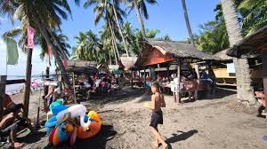

Kalayaan Beach Resort

Kalayaan Beach Resort is a public beach located in Purok Kalayaan, Barangay Daliao, Toril, Davao City. It is known for being one of the city's oldest public resorts, offering an affordable and straightforward seaside experience.
Key Features and Amenities
- Accommodations: The resort primarily offers open-air beach huts and large cottages for rent. Unique to this location is an at-sea floating cottage where visitors can spend the day.
- Seafood: There is a fish cage located next to the floating cottage that provides fresh live seafood, such as grouper and lobster.
- Activities: Visitors can swim, stroll the coast, kayak, or relax in the secluded atmosphere.
- Accessibility: The resort features wheelchair-accessible entrances and parking lots.
Historical Significance
Talomo Beach holds deep historical roots as a strategic naval beachhead used by Japanese, American, and Spanish forces. During the Japanese occupation, the area was known as "Little Tokyo" due to the dense population of Japanese families living along the shoreline.
Visiting Information
- Entrance Fee: Generally, there is no entrance fee to access the beach.
- Operating Hours: Open daily from 6:00 AM to 7:00 PM.
- Contact: You can reach them at +63 939 373 8615 or via their official Facebook page.
Please note that there is also a luxury property with a similar name, Kalaiyaan Coast, located in San Juan, Batangas, which offers premium suites and a different range of amenities.